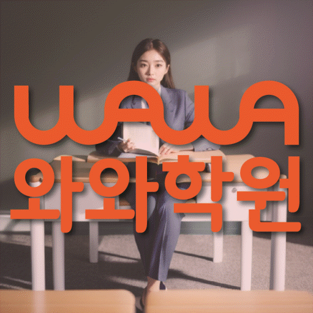

Elementary school Korean · English · Math
은행동 초등학생 국영수학원
경기 시흥시 은행동 초등학생 국영수학원 선택 전 국어·영어·수학 진단, 교과 진도와 기초 학습 자료, 과목별 오답 관리와 센터 상담 확인 항목을 정리했습니다.
01 Quick answer
은행동에서 먼저 확인할 내용
은행동에서 초등학생 국영수학원을 찾는다면 와와학습코칭센터 시흥대야점의 과목별 가능 학년을 먼저 확인하세요. 제공된 초등학교 참고 자료와 학생의 실제 교재를 대조하고, 세 과목의 과제 순서와 오답 복습 시점을 스스로 정리하기 어려운 초등학생에게 맞게 과목별로 무엇을 먼저 보완할지 정하는 순서가 필요합니다.
대표 학생 상황
세 과목의 과제 순서와 오답 복습 시점을 스스로 정리하기 어려운 초등학생


 010-6839-8283
010-6839-8283원고 핵심 답변
은행동 초등학생의 세 과목 학습을 비교한다면 현재 기초와 공부 습관부터 살펴야 합니다. 은행동 초등학생 국영수학원 기준에서 처음 판단할 지점은 한 과목 성적만이 아니라 독해, 어휘, 연산, 풀이 습관이 함께 관리되는지입니다. 경기 시흥시 은행동에서 학교 숙제와 개인 공부의 경계를 잡아야 하는 상황이라면 초등 4학년 중 수학 사고력 문제에서 조건을 표로 정리하는 습관이 필요한 학생으로, 학교 숙제와 학원 과제를 한 번에 몰아서 처리하려는 아이인지부터 확인해야 하며, 은행동 초등학생 국영수학원은 국어·영어·수학을 한꺼번에 밀어붙이는 곳보다 진단과 복습, 과제 확인이 연결되는지 살펴보는 편이 좋습니다. 이 원고는 은행동 초등학생을 둔 학부모가 상담 전에 묻는 질문에 답하도록 수업 구조, 학교 연계, 학습습관관리 관점의 확인사항을 차례로 정리했습니다.
은행동 초등학생에게 국어·영어·수학 학습 점검이 필요한 순간
은행동 초등학생 국영수학원은 많은 과목을 동시에 시키는 선택지로만 이해하면 판단이 흐려집니다. 경기 시흥시 은행동의 학교 숙제와 개인 공부의 경계를 잡아야 하는 가정이라면 아이가 수학 사고력 문제에서 조건을 표로 정리하는 습관이 필요한지, 아니면 단순히 숙제 시간이 부족한지부터 나누어 보아야 합니다. 초등 4학년 시기에는 국어 독해가 느려지면 영어 지문 이해와 수학 문장제까지 같이 흔들릴 수 있어, 은행동 국어·영어·수학 학습 계획 상담에서는 과목별 약점과 생활 루틴을 함께 확인하는 과정이 필요합니다. 특히 은행동 초등학생 세 과목 학습 상담에서 학교 숙제와 학원 과제를 한 번에 몰아서 처리하려는 아이는 수업의 난이도보다 시작, 풀이, 채점, 질문의 순서를 몸에 익히는지가 더 중요한 기준이 됩니다.
은행동 초등학생의 국어·영어·수학 학습 점검 교재와 과제는 어떻게 봐야 할까
경기 시흥시 은행동 학부모가 교재를 볼 때는 두꺼운 책의 권수보다 아이가 실제로 설명할 수 있는 예제와 다시 풀어야 할 오답이 구분되어 있는지 확인해야 합니다. 은행동 초등학생 세 과목 학습 상담 교재 점검에서는 초등 4학년 학생이 수학 사고력 문제에서 조건을 표로 정리하는 습관이 필요한 상태일 때 국어 교재의 근거 표시, 영어 교재의 단어와 문장 연결, 수학 교재의 풀이 과정 보존을 함께 보아야 합니다. 은행동 초등학생 세 과목 학습 상담에서 과제를 받을 때는 은행동 아이가 어느 요일에 끝낼지, 틀린 문제를 언제 다시 볼지, 학부모가 어떤 부분만 확인하면 되는지까지 정리되어야 부담이 줄어듭니다. 교재 수준은 높을수록 좋은 것이 아니라 수학 사고력 문제에서 조건을 표로 정리하는 습관이 필요한 초등 4학년 상태를 한 단계씩 넘어가게 만드는지가 핵심입니다.
학습습관관리까지 고려한 은행동 초등학생 학습 점검 관리 방식
학습습관관리은 은행동 초등학생 학습 점검의 핵심을 가장 직접적으로 보여 주는 키워드입니다. 경기 시흥시 은행동의 초등 4학년 학생이 수학 사고력 문제에서 조건을 표로 정리하는 습관이 필요한 초등 4학년 상태라면 국어·영어·수학 수업 뒤에 무엇을 복습했고 무엇을 다시 질문해야 하는지까지 남기는 관리가 필요합니다. 초등 국어·영어·수학 관리 기준에서 학습 관리는 수업 출석만 확인하는 일이 아니라, 아이가 배운 내용을 어떤 문제에서 사용했고 어느 부분을 다시 봐야 하는지 남기는 과정입니다. 은행동 초등학생에게는 과제의 양보다 오답을 다시 만나는 주기, 질문을 꺼내는 분위기, 학부모에게 전달되는 피드백의 구체성이 더 실질적인 도움이 됩니다.
은행동 초등학교 자료를 수업 계획에 반영하는 방법
은행동 페이지의 초등학교 참고 정보에는 은계초·은행초이 포함됩니다. 학교명만으로 수업 가능 여부를 판단하지 않고 센터의 현재 개설 범위를 함께 확인해야 합니다.
학교 자료는 이름 나열보다 활용 방식이 중요합니다. 은행동 초등학생의 교과 진도·알림장·단원평가 자료에서 과목별 범위와 어려운 문제를 표시해 상담 계획과 대조하는 편이 좋습니다.
은행동 아이의 자기주도학습으로 연결하는 방법
이 지역의 초등학생 학습 과정의 목표는 학원 안에서만 문제를 맞히는 것이 아니라 집에서도 아이가 오늘 배운 내용을 꺼내 보는 상태를 만드는 것입니다. 경기 시흥시 은행동의 초등 4학년 학생이 학교 숙제와 학원 과제를 한 번에 몰아서 처리하려는 아이일수록 학습 플래너를 길게 쓰기보다 국어 한 문단, 영어 단어 다섯 개, 수학 오답 한 문제처럼 실행 단위를 작게 잡는 편이 좋습니다. 수학 사고력 문제에서 조건을 표로 정리하는 습관이 필요한 경우에는 스스로 공부하라는 말만으로는 부족하므로, 초등 국어·영어·수학 관리 기준 수업 뒤에 무엇을 표시하고 무엇을 부모에게 보여 줄지 정해 두어야 합니다. 자기주도학습은 혼자 두는 방식이 아니라 은행동 아이가 도움을 받는 지점과 혼자 해내는 지점을 구분하는 과정입니다.
초등에서 중등으로 이어지는 은행동 국영수 방향
은행동 초등학생 학습 점검을 찾는 이유가 예비 중등 준비라면 초등 단계의 목표를 지나치게 앞당길 필요는 없습니다. 경기 시흥시 은행동의 초등 4학년 학생에게는 국어 지문을 끝까지 읽는 힘, 영어 문장을 누적해 복습하는 습관, 수학 풀이를 말로 설명하는 연습이 먼저입니다. 수학 사고력 문제에서 조건을 표로 정리하는 습관이 필요한 아이는 현재 수준보다 많은 문제량을 갑자기 늘리면 자신감이 흔들릴 수 있으므로, 은행동 국어·영어·수학 학습 계획 상담에서는 현재 학년의 빈칸을 정리한 뒤 다음 단원으로 넘어가는 순서를 확인해야 합니다. 중등 대비라는 말도 은행동 가정에서는 아이가 스스로 질문하고 오답을 다시 볼 수 있는 생활 루틴으로 번역되어야 합니다.
02 Consultation examples
은행동 학부모 상담 상황 예시
아래 내용은 실제 고객 후기나 성적 결과가 아니라, 상담에서 확인할 질문을 이해하기 위한 상황 예시입니다.
은행동 학부모가 자녀의 세 과목 학습량이 서로 충돌하는 문제를 질문한 상황을 예로 들었습니다. 상담 후에는 성적 약속보다 과목별 최소 복습량, 집중 단원과 재확인 날짜가 구체적인지 살펴봅니다.
은행동 기준 제공된 초등학교 참고 정보인 은계초·은행초의 목록과 학생의 실제 학교 자료를 대조해 질문하는 상황입니다. 학부모는 학교명 자체보다 시험 범위와 수행평가 일정이 수업 계획에 반영되는지, 다음 확인 시점이 언제인지 기록합니다.
03 FAQ
은행동 초등학생 국영수학원 자주 묻는 질문
학부모님이 상담 전에 자주 확인하는 내용을 질문과 답변으로 정리했습니다.
은행동 초등학생 국영수학원 선택 전 학생의 어떤 습관을 살펴야 하나요?
현재 모습이 세 과목의 과제 순서와 오답 복습 시점을 스스로 정리하기 어려운 초등학생에 가깝다면 최근 시험지, 학교 자료와 반복 오답을 준비해 원인을 분류해 보세요. 상담 결과와 실제 수업 가능 여부는 희망 센터에서 별도로 확인해야 합니다.
은행동 초등학생이 국어·영어·수학을 함께 관리할 때 무엇을 구분해야 하나요?
은행동 상담에서는 국영수를 함께 관리한다는 말은 세 과목을 동일하게 다룬다는 뜻이 아닙니다. 학생이 막힌 장면과 시험 일정을 과목별로 확인한 뒤 공통 시간표 안에서 충돌하지 않게 배치합니다.
은행동 초등학교 참고 정보는 상담에서 어떻게 활용하나요?
은계초·은행초 등은 제공 자료의 초등학교 참고 목록입니다. 학생이 가져온 교과 진도·알림장·단원평가 자료를 대조하고 희망 센터의 과목·학년 운영 여부를 별도로 확인하세요.
은행동 센터 방문 전에 확인할 운영 정보는 무엇인가요?
은행동 초등학생 국영수학원 페이지의 제공 센터 사실을 기준으로 답합니다. 제공 자료상 해당 센터 위치는 경기 시흥시 은행로167번길 7 크리스탈 빌딩 503호,504호입니다. 제공 자료의 과목별 학년 정보는 국어 초3·초4·초5·초6, 영어 초3·초4·초5·초6, 수학 초3·초4·초5·초6입니다. 교습비 자료는 페이지의 센터별 교습비 확인 버튼에서 볼 수 있습니다. 과목 개설과 수업 시각, 보강·통학 관련 운영은 바뀔 수 있으므로 최종 등록 전에 직접 확인하세요.
04 Continue
은행동 페이지 이동
카테고리 전체 지역 또는 앞뒤 지역 안내로 이동할 수 있습니다.